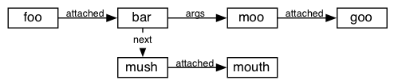

Terminology
Example:
foo bar(moo goo); mush mouthIn the above example:
In Diagram form:

Important: Modifying the message tree of a block currently in use may cause a crash if a garbage collection cycle occurs. If the implementation were changed to retain every called message, this could be avoided. But the cost to performance seems to outweigh the need to cover this case for now.
Returns a Message that is a deep copy of the receiver.
type
Returns a String with the value "Message".
name
Returns the name of the receiver.
setName(aMessage)
Sets the name of the receiver. Returns self.
nextMessage
Returns the next message in the message chain or Nil if there is no next message.
setNextMessage(aMessage)
Sets the next message in the message chain to a deep copy of aMessage or it removes the next message if aMessage is Nil. Raises an exception if aMessage is already a
attachedMessage
Returns the message attached to the receiver or Nil if there is no message attached.
setAttachedMessage(aMessage)
Sets the message attached the message chain to a deep copy of aMessage. If aMessage is Nil, it removes any attached message.
arguments
Returns a list of the message objects that act as the receiver's arguments. Modifying this list will not alter the actual list of arguments. Use the arguments_() method to do that.
setArguments(aListOfMessages)
Sets the arguments of the receiver to deep copies of those contained in aListOfMessages.
doInContext(anObject)
Evaluates the receiver in the context of anObject. (Deprecated - use Object doMessage(aMessage) instead).
fromString(aString)
Returns a new Message object for the compiled(but not executed) result of aString.